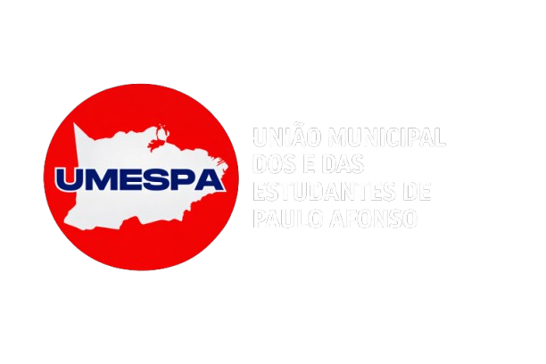

Representando, fortalecendo e organizando o movimento estudantil secundarista do município.
A UMESPA é a entidade máxima de representação dos estudantes secundaristas do município de Paulo Afonso. Atua no fortalecimento dos Grêmios Estudantis, na defesa da educação pública de qualidade e na organização do movimento estudantil nas escolas do município.
Fundada com o objetivo de unificar os estudantes, a UMESPA surge como instrumento de organização, luta e protagonismo juvenil, ampliando a participação da juventude nas decisões educacionais e sociais.
Criar um Grêmio Estudantil é um direito garantido aos estudantes. Para isso é necessário: